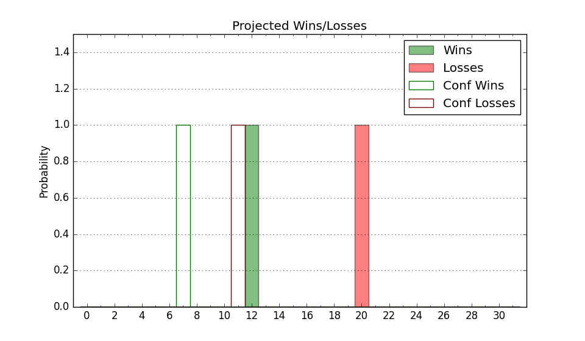

| Home | Game Probabilities | Conferences | Preseason Predictions | Odds Charts | NCAA Tournament |
| City: | Pocatello, Idaho | |
| Conference: | Big Sky (7th)
| |
| Record: | 7-11 (Conf) 12-20 (Overall) | |
| Ratings: | Comp.: -6.7 (249th) Net: -6.7 (249th) Off: 103.3 (210th) Def: 110.0 (262nd) SoR: 0.0 (129th) |
| Remaining | ||||||
|---|---|---|---|---|---|---|
| Date | Opponent | Win Prob | Pred. | |||
| Previous | Game Score | |||||
| Date | Opponent | Win Prob | Result | Off | Def | Net |
| 11/10 | @St. Thomas MN (145) | 18.2% | L 53-54 | -14.5 | 24.5 | 10.0 |
| 11/12 | @Iowa St. (11) | 2.0% | L 55-86 | -3.9 | 4.8 | 1.0 |
| 11/20 | (N) The Citadel (243) | 48.7% | L 61-62 | -6.5 | -0.2 | -6.6 |
| 11/21 | @Campbell (297) | 47.8% | W 69-55 | 7.3 | 17.1 | 24.4 |
| 11/28 | @Pepperdine (205) | 28.9% | L 62-77 | -8.7 | -6.9 | -15.6 |
| 12/2 | Lindenwood (358) | 92.5% | W 76-70 | -3.9 | -11.4 | -15.3 |
| 12/5 | @Fresno St. (236) | 33.2% | L 67-79 | -5.1 | 0.3 | -4.8 |
| 12/9 | @Southern Utah (259) | 36.9% | L 74-82 | -1.3 | -2.7 | -4.0 |
| 12/21 | @Oregon St. (148) | 18.6% | L 57-76 | -3.6 | -8.5 | -12.1 |
| 12/28 | Montana St. (223) | 61.0% | L 66-74 | -3.4 | -12.2 | -15.6 |
| 12/30 | Montana (147) | 43.5% | L 68-76 | -3.4 | 0.4 | -3.0 |
| 1/3 | @Denver (264) | 37.4% | L 82-95 | -0.9 | -10.4 | -11.4 |
| 1/6 | Nebraska Omaha (265) | 67.6% | W 63-62 | -6.9 | -1.2 | -8.2 |
| 1/11 | @Portland St. (260) | 37.1% | W 69-63 | 6.5 | 7.8 | 14.3 |
| 1/13 | @Sacramento St. (315) | 53.8% | L 64-66 | 7.8 | -13.5 | -5.8 |
| 1/18 | Idaho (324) | 82.5% | W 64-59 | -9.8 | 5.8 | -4.0 |
| 1/20 | Eastern Washington (152) | 44.6% | L 67-79 | -10.4 | -7.4 | -17.8 |
| 1/22 | @Montana St. (223) | 31.5% | L 70-77 | 5.8 | -12.3 | -6.5 |
| 1/27 | @Weber St. (157) | 20.3% | W 74-64 | 8.5 | 20.0 | 28.5 |
| 2/1 | @Northern Colorado (195) | 27.4% | L 86-91 | 3.6 | -1.1 | 2.5 |
| 2/3 | @Northern Arizona (319) | 55.5% | W 81-79 | 17.6 | -10.7 | 6.9 |
| 2/8 | Sacramento St. (315) | 79.9% | W 68-40 | 12.6 | 31.7 | 44.3 |
| 2/10 | Portland St. (260) | 66.7% | W 68-65 | 8.7 | -2.2 | 6.5 |
| 2/15 | @Eastern Washington (152) | 19.1% | L 82-88 | 18.4 | -14.1 | 4.3 |
| 2/17 | @Idaho (324) | 58.1% | L 53-55 | -25.5 | 18.0 | -7.5 |
| 2/24 | Weber St. (157) | 46.4% | W 80-62 | 17.2 | 17.0 | 34.2 |
| 2/29 | Northern Arizona (319) | 81.0% | L 88-92 | -1.8 | -13.4 | -15.3 |
| 3/2 | Northern Colorado (195) | 56.3% | L 79-81 | 0.7 | -6.5 | -5.8 |
| 3/4 | @Montana (147) | 18.4% | L 65-79 | -2.3 | -10.2 | -12.5 |
| 3/9 | (N) Northern Arizona (319) | 69.7% | W 68-60 | -5.0 | 6.0 | 1.0 |
| 3/10 | (N) Northern Colorado (195) | 41.1% | W 83-76 | 8.1 | 5.3 | 13.4 |
| 3/12 | (N) Montana (147) | 29.4% | L 58-72 | -7.4 | -1.1 | -8.5 |
| Stats & Trends | |||||
|---|---|---|---|---|---|
| Current | Day | Week | Month | Season | |
| Composite | -6.7 | -0.2 | +0.2 | -0.2 | +3.3 |
| Comp Rank | 249 | -1 | -1 | -3 | +24 |
| Net Efficiency | -6.7 | -0.2 | +0.2 | -0.2 | -- |
| Net Rank | 249 | -1 | -1 | -6 | -- |
| Off Efficiency | 103.3 | -0.2 | -0.0 | -0.0 | -- |
| Off Rank | 210 | -2 | +2 | -5 | -- |
| Def Efficiency | 110.0 | -0.0 | +0.2 | -0.2 | -- |
| Def Rank | 262 | -- | +8 | +12 | -- |
| SoS Rank | 270 | +6 | -2 | +4 | -- |
| Exp. Wins | 12.0 | -- | +1.3 | +0.4 | +0.5 |
| Exp. Conf Wins | 7.0 | -- | -0.7 | -1.6 | -0.5 |
| Conf Champ Prob | 0.0 | -- | -- | -0.0 | -3.1 |

| Advanced Stats | ||
|---|---|---|
| Stat | Value | Rank |
| Off Eff FG % | 0.490 | 229 |
| Off Ast Ratio | 0.132 | 247 |
| Off ORB% | 0.295 | 120 |
| Off TO Rate | 0.149 | 190 |
| Off FT Ratio | 0.324 | 199 |
| Def Eff FG % | 0.545 | 323 |
| Def Ast Ratio | 0.145 | 189 |
| Def ORB% | 0.293 | 239 |
| Def TO Rate | 0.153 | 133 |
| Def FT Ratio | 0.343 | 225 |